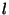
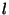

Members of a library do not have to be listed in any particular order since CM will automatically calculate the dependency graph. Some minor restrictions on the source language are necessary to make this work:
Note that these rules do not require the exports of imported libraries
to be distinct from the exports of ML source files in the current
library. If an ML source file  re-defines a name
re-defines a name  that is also
imported from library , then the disambiguating rule is that the
definition from
that is also
imported from library , then the disambiguating rule is that the
definition from  takes precedence over that from in all sources
except
takes precedence over that from in all sources
except  itself. Free occurences of
itself. Free occurences of  in
in  refer to 's
definition. This rule makes it possible to easily write code for
exporting an ``augmented'' version of some module. Example:
refer to 's
definition. This rule makes it possible to easily write code for
exporting an ``augmented'' version of some module. Example:
structure A = struct (* defines augmented A *)
open A (* refers to imported A *)
fun f x = B.f x + C.g (x + 1)
end
Rule 3 may come as a bit of a surprise considering that each ML source file can be a member of at most one library (see section 2.7). However, it is indeed possible for two libraries to (re-)export the ``same'' definition provided they both import that definition from a third library. For example, let us assume that a.cm exports a structure X which was defined in x.sml--one of a.cm's members. Now, if both b.cm and c.cm re-export that same structure X after importing it from a.cm, it is legal for a fourth library d.cm to import from both b.cm and c.cm.
The full syntax for library description files also includes provisions
for a simple ``conditional compilation'' facility (see
Section 7), for access control (see
Section 8), and it accepts ML-style nestable comments
delimited by (* and *).